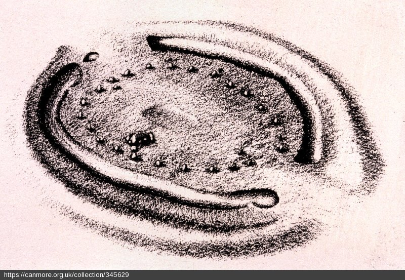

date: 20.04.22 (a sunny, rainy, foggy wednesday)
time: 4:45
travel: by driving
location: from Glasgow to Bathgate—is a town in West Lothian, Scotland—5 miles (8 km) west of Livingston.
hope: walking and whistle and whisper with ghosts, birds, sheeps...

the 1st field trip for my phd research. i woke up and felt anxious a little. i was worried about all potential tech problems. i checked everything over and over to make sure all the batteries are full. i made my bag earlier on way before hid the road. i had more time to work but i was way more excited about the trip. i decided to make some hibiscus tea that is boiled with some cinnamon stick, lemon, clove, and anise. it did actually make sense all the unnecessary preparation because Cairnpapple is specifically known by the rituals. tea is always part of my ritual.
my friend Katie wanted to join me and she wanted to drive me up to the cairnpapple hill. i was happy with her offer because i don't have a car and it was going to take extra time figuring out how to get there probably by multiple public transportations. and also it is always nice to have a friend to talk with. i walked 35 minutes and passed by the Kelvingrove Park to Katie's place and arrived there five minutes early. i texted her earlier and said on my way! i waited 15 min downstairs because her door bell was broken. it wasn't pleasant but that's okay.
the weather was very nice, shining sunny. i trusted the sun. but i was wrong. the travel took 45 minutes and by the time we arrived there somehow winter back! it was as dark as underneath of the tumulus. as cold as the moon. we were actually in the space tumulus!
i had my big patagonia short on and had no backup warm cloths (annoying tourist vibe). because i trusted the sun (i shouldn't have). Katie asked me "are you ok? it is really cold" and i said yeah, sure, i'm fine. there were a high up stairs to the hill. when you look up the stair you only see the sky at the end. nothing else. it reminded me the book called tumulus as sema which was a collection of tumulus research from a conferance in istanbul. i thought the tumulus should be in "sema"! (sema means the sky in turkish). we walked through the path alongside the grass and sheeps.
i took my time and slowly climbed up and the wind welcomed us. the wind is always there in Scotland. never leave you alone. this time we got much closer. they made their way underneath my short and gave my whole body a big hug. that was too much. freezing.
somehow we could struggle a little bit with the overwind condition. i walked around the tumulus multiple times and different direction. i could make some recording with the gopro that i borrowed from TSD-GSA just for a week. my hands were shaking. honestly, at that moment, i didn't know what i was doing anymore. i just had a great time with the whole challenge.
we realised that the tumulus has interior artifact that we could visit inside but it was closed. through out the history Cairnpapple tumulus has manipulated multiple times. it is too much manipulation! we wanted to see inside anyways but next time, when the wind on leave.
i kept walking, listening, thinking, freezing....